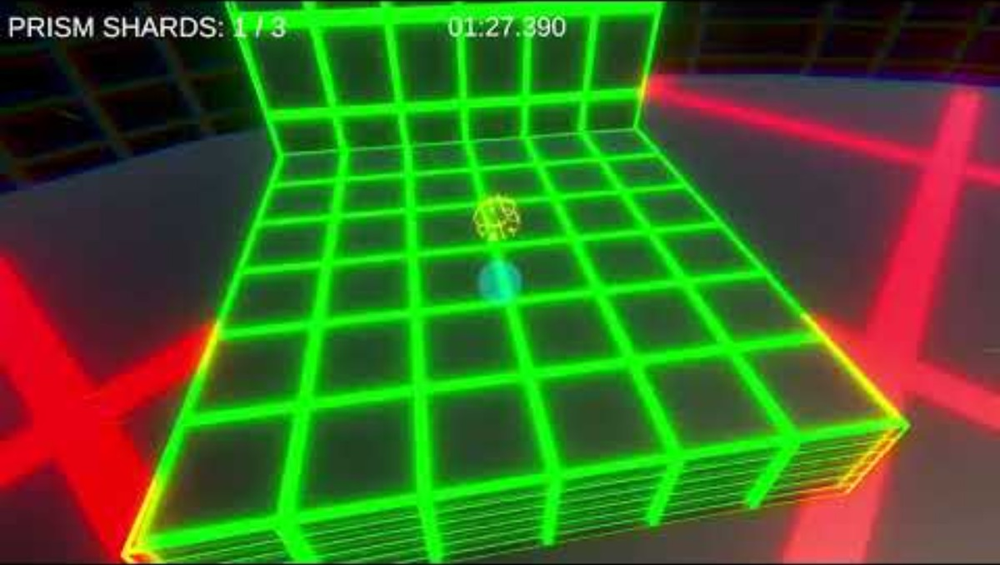

Hi, I'm Rizq Rayyan
Game Developer & Software Engineer
I specialize in C#, C++, and the Unity Engine, with a passion for building robust game architectures, making complex physics, and creating engaging interactive experiences.
View My Work Download Resume
About Me
I'm a Year 3 Game Development & Technology diploma student at Nanyang Polytechnic, graduating Apr 2027. I like building things end-to-end, from gameplay systems and custom physics to the infrastructure that keeps them running, and I'm currently looking for a Junior Unity Developer role where I can keep doing exactly that.
Languages
Engines & Tools
Architecture
Version Control & Cloud
My Projects
A showcase of my software engineering and game development journey at Nanyang Polytechnic.

Chromatic Decay
Role: Solo Developer (Year 3 Specialisation Project)
Solo-developed a first-person momentum platformer over a 17-week production cycle, covering design, programming, art, and audio. Standing still triggers "the Glitch," a shader-driven visual/audio distortion that replaces a traditional health bar, paired with an advanced movement kit (Dash, Wavedash, Hyperdash, Wallrun) and custom physics for weighty, precise tech-jumps. Refined through an 11-tester Beta playtest and a full post-Beta patch.
Watch Gameplay Demo Download Build (.zip) Download Source (.zip)AR Halal Ingredient Checker
Role: Lead Programmer
Developed an Augmented Reality mobile application designed to scan and verify halal ingredients. Programmed the core scanning and database retrieval mechanics using C#, JavaScript and Unity, resulting in a tool that successfully processes and cross-references ingredient lists in real time.
Download Source (.zip)"Celeste" Mobile Clone
Role: Gameplay & Systems Programmer
Programmed a fully playable mobile clone of the platformer "Celeste" optimized for Android devices. Successfully reverse-engineered the tight platforming physics purely in JavaScript using Android Studio. Features a custom-built XML level reader for dynamic data parsing.
Download Source (.zip)"VVVVVV" OpenGL Clone
Role: Engine & Gameplay Programmer
Developed a functional clone of the gravity-flipping platformer "VVVVVV" from scratch using a custom OpenGL framework. Engineered unique enemy behaviors and core gameplay loops utilizing Finite State Machines (FSMs), replicating complex physics and collision detection systems.
Download Source (.zip)Let's Connect
I am currently seeking a Junior Unity Developer position.
Email Me LinkedIn Download Resume